dotwhisker: Dot-and-Whisker Plots of Regression Results
Frederick Solt and Yue Hu
2021-08-30
Source:vignettes/dotwhisker-vignette.Rmd
dotwhisker-vignette.RmdGraphs have long been known to be a more compact and effective means of conveying the results of regression models than tables (Gelman, Pasarica, and Dodhia 2002; Kastellec and Leoni 2007), but many researchers continue to list these results in tables. The reason, Kastellec and Leoni (2007) surmised, is “simply put, it takes much greater effort to produce a quality graph than a table.” The dotwhisker package provides a quick and easy way to create highly customizable dot-and-whisker plots for presenting and comparing the output of regression models. It can be used to plot estimates of coefficients or other quantities of interest (e.g., predicted probabilities) within a single model or across different models: the estimates are presented as dots and their confidence intervals as whiskers (see Kastellec and Leoni 2007, 765–67).
Users can easily customize the content of their plots: presenting multiple models or results for a subset of variables is easy. Moreover, by outputting ggplot objects (Wickham 2009), dotwhisker allows users to further modify the format of their plots in nearly infinite ways.
This vignette illustrates basic use of the package’s mainstay function, dwplot, for creating dot-and-whisker plots from model objects; more advanced uses of dwplot that employ tidy data frames as input; and, finally, some useful variations of dot-and-whisker plots that are easily made using other functions in the dotwhisker package.
Basic Use: Plotting Results from One or More Regression Models
Generating dot-and-whisker plots from model objects generated by the most commonly used regression functions is straightforward. To make a basic dot-and-whisker plot of any single model object of a class supported by parameters::parameters, simply pass it to dwplot. For these examples, we’ll use the mtcars dataset extracted from the 1974 volume of the US magazine, Motor Trend.
#Package preload
library(dotwhisker)
library(dplyr)
# run a regression compatible with tidy
m1 <- lm(mpg ~ wt + cyl + disp + gear, data = mtcars)
# draw a dot-and-whisker plot
dwplot(m1)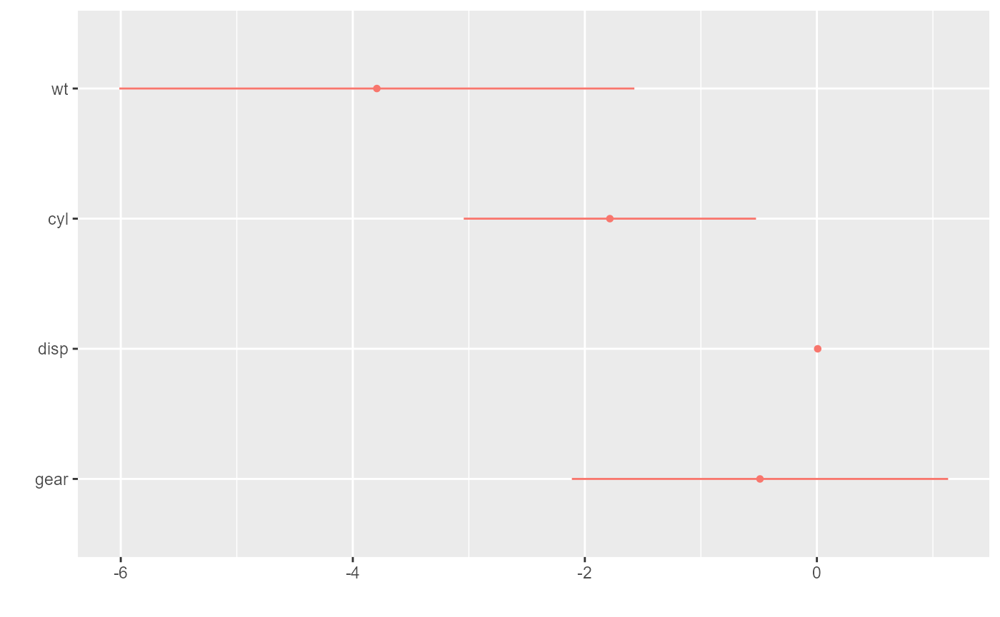
By default, the whiskers span the 95% confidence interval. To change the width of the confidence interval, specify a ci argument to pass to parameters::parameters():
dwplot(m1, ci = .60) + # using 60% of confidence intervals
theme(legend.position = "none") 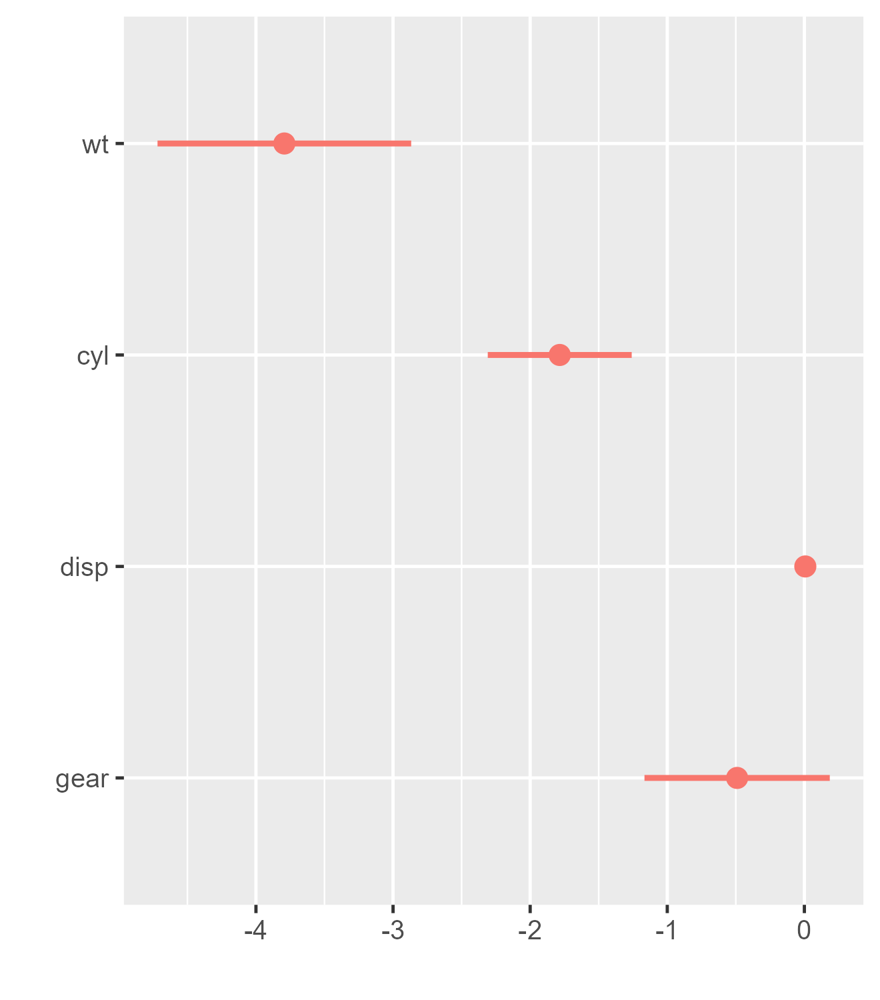
Plotting the results of more than one regression model is just as easy. Just pass the model objects to dwplot as a list. The dodge_size argument is used to adjust the space between the estimates of one variable when multiple models are presented in a single plot. Its default value of .4 will usually be fine, but, depending on the dimensions of the desired plot, more pleasing results may be achieved by setting dodge_size to lower values when the plotted results include a relatively small number of predictors or to higher values when many models appear on the same plot.
m2 <- update(m1, . ~ . + hp) # add another predictor
m3 <- update(m2, . ~ . + am) # and another
dwplot(list(m1, m2, m3))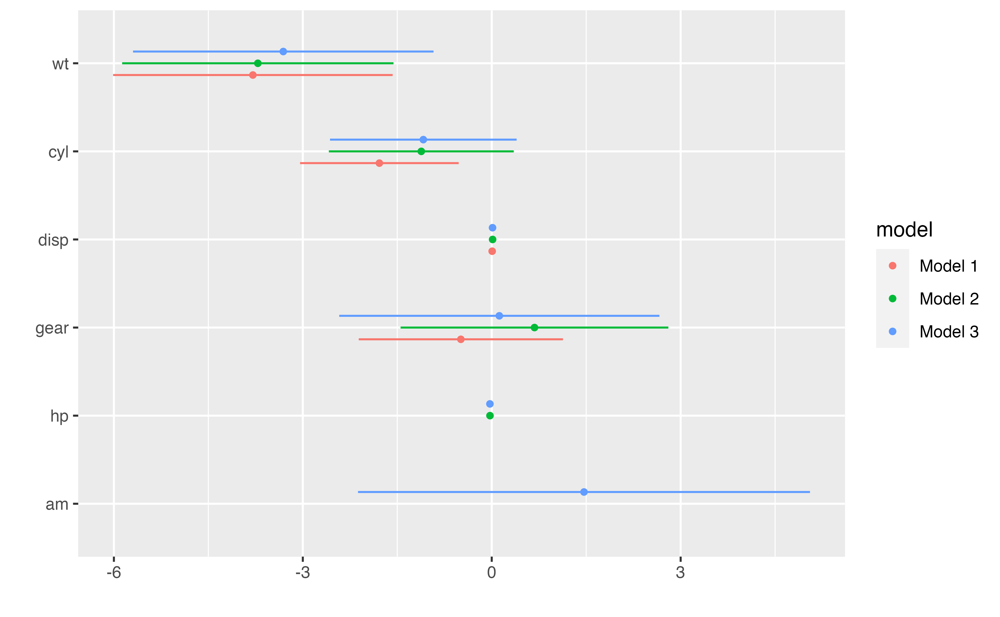
Model intercepts are rarely theoretically interesting (see Kastellec and Leoni 2007, 765), so they are excluded by dwplot by default. They are easy to include if desired, however, by setting the show_intercept argument to true.
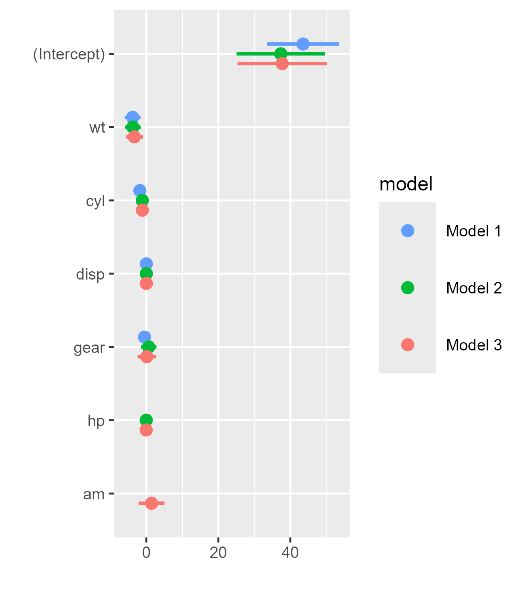
Users are free to customize the order of the models and variables to present with the arguments model_order and vars_order. Moreover, the output of dwplot is a ggplot object. Add or change any ggplot layers after calling dwplot to achieve the desired presentation. Users can provide a named character vector to relabel_predictors, a dotwhisker function, conveniently renames the predictors. Note that both vars_order and relabel_predictors changes the presenting order of variables. When both are used, the later overwrites the former.
dwplot(list(m1, m2, m3),
vline = geom_vline(
xintercept = 0,
colour = "grey60",
linetype = 2
),
vars_order = c("am", "cyl", "disp", "gear", "hp", "wt"),
model_order = c("Model 2", "Model 1", "Model 3")
) %>% # plot line at zero _behind_coefs
relabel_predictors(
c(
am = "Manual",
cyl = "Cylinders",
disp = "Displacement",
wt = "Weight",
gear = "Gears",
hp = "Horsepower"
)
) +
theme_bw(base_size = 4) +
# Setting `base_size` for fit the theme
# No need to set `base_size` in most usage
xlab("Coefficient Estimate") + ylab("") +
geom_vline(xintercept = 0,
colour = "grey60",
linetype = 2) +
ggtitle("Predicting Gas Mileage") +
theme(
plot.title = element_text(face = "bold"),
legend.position = c(0.007, 0.01),
legend.justification = c(0, 0),
legend.background = element_rect(colour = "grey80"),
legend.title = element_blank()
) 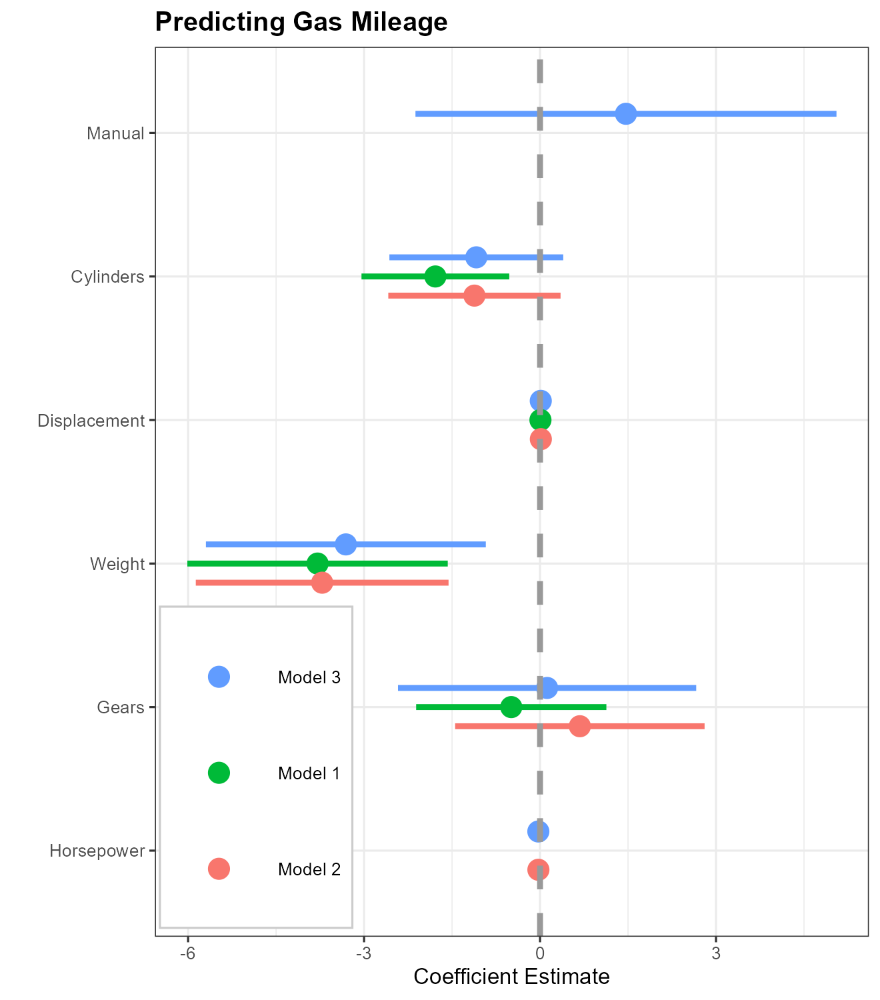
There are many other packages (e.g., coefplot) that have the ability to draw dot-and-whisker plots of at least a single set of regression results taking model objects as input. While this is very convenient, it also comes with some severe limitations. First, many less common model objects are not supported. Second, rescaling coefficients, reordering them, or just plotting a subset of results is typically impossible. And third, quantities of interest beyond coefficient estimates cannot be plotted. The dotwhisker package avoids all of these limitations by optionally taking as its input a tidy data frame of estimates drawn from a model object rather than the model object itself.
Advanced Use: Decoration and Modification
Plotting Results Stored in a Tidy Data Frame
In addition to model objects, the input for dwplot may be a tidy data frame that includes three columns: term, that is, the variable name; estimate, the regression coefficients or other quantity of interest; and std.error, the standard errors associated with these estimates. In place of std.error one may substitute conf.low, the lower bounds of the confidence intervals of the estimates, and conf.high, the corresponding upper bounds. As noted above, “tidy data” (Robinson 2015) refers such a data frame of estimates for many common classes of model objects (indeed, dwplot was written to expect a data.frame with the columns term, estimate, and std.error). When more than one model’s results are to be plotted, an additional column model that identifies the two models must be added to the data frame (alternate names for this last column may be specified by using the model_name argument).
# regression compatible with tidy
m1_df <- broom::tidy(m1) # create data.frame of regression results
m1_df # a tidy data.frame available for dwplot## # A tibble: 5 x 5
## term estimate std.error statistic p.value
## <chr> <dbl> <dbl> <dbl> <dbl>
## 1 (Intercept) 43.5 4.86 8.96 0.00000000142
## 2 wt -3.79 1.08 -3.51 0.00161
## 3 cyl -1.78 0.614 -2.91 0.00722
## 4 disp 0.00694 0.0120 0.578 0.568
## 5 gear -0.490 0.790 -0.621 0.540
dwplot(m1_df) #same as dwplot(m1)
Using tidy can be helpful when one wishes to omit certain model estimates from the plot. To illustrate, we drop the intercept (although this is in fact done by dwplot automatically by default):
m1_df <-
broom::tidy(m1) %>% filter(term != "(Intercept)") %>% mutate(model = "Model 1")
m2_df <-
broom::tidy(m2) %>% filter(term != "(Intercept)") %>% mutate(model = "Model 2")
two_models <- rbind(m1_df, m2_df)
dwplot(two_models)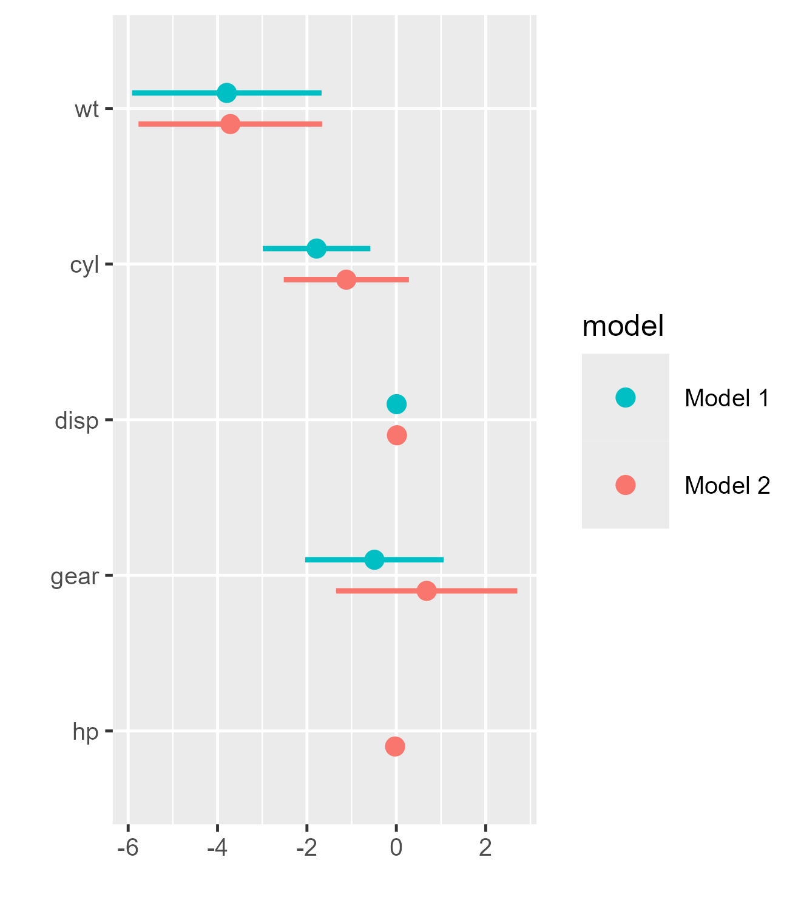
You can also filter by regular expressions. This can be helpful, for instance, if a model contains a factor with many levels (e.g., a dummy variable for each country) which you might not want to include in your plot.
# Transform cyl to factor variable in the data
m_factor <-
lm(mpg ~ wt + cyl + disp + gear, data = mtcars %>% mutate(cyl = factor(cyl)))
# Remove all model estimates that start with cyl*
m_factor_df <- broom::tidy(m_factor) %>%
filter(!grepl('cyl*', term))
dwplot(m_factor_df)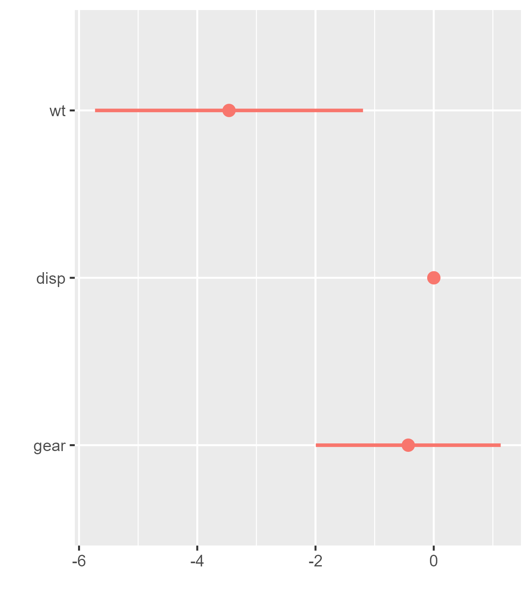
It can also be convenient to build a tidy data frame of regression results directly, that is, without first creating model objects:
# Run model on subsets of data, save results as tidy df, make a model variable, and relabel predictors
by_trans <- mtcars %>%
group_by(am) %>% # group data by trans
do(broom::tidy(lm(mpg ~ wt + cyl + disp + gear, data = .))) %>% # run model on each grp
rename(model = am) %>% # make model variable
relabel_predictors(c(
wt = "Weight",
# relabel predictors
cyl = "Cylinders",
disp = "Displacement",
gear = "Gear"
))
by_trans## # A tibble: 10 x 6
## # Groups: model [2]
## model term estimate std.error statistic p.value
## <dbl> <fct> <dbl> <dbl> <dbl> <dbl>
## 1 0 Weight -2.81 1.27 -2.22 0.0434
## 2 0 Cylinders -1.30 0.599 -2.17 0.0473
## 3 0 Displacement 0.00692 0.0129 0.534 0.601
## 4 0 Gear 1.26 1.81 0.696 0.498
## 5 0 (Intercept) 30.7 7.41 4.15 0.000986
## 6 1 Weight -7.53 2.77 -2.71 0.0265
## 7 1 Cylinders 0.198 1.70 0.116 0.910
## 8 1 Displacement -0.0146 0.0315 -0.464 0.655
## 9 1 Gear -1.08 2.14 -0.506 0.627
## 10 1 (Intercept) 48.4 11.1 4.34 0.00247
dwplot(by_trans,
vline = geom_vline(
xintercept = 0,
colour = "grey60",
linetype = 2
)) + # plot line at zero _behind_ coefs
theme_bw(base_size = 4) + xlab("Coefficient Estimate") + ylab("") +
ggtitle("Predicting Gas Mileage by Transmission Type") +
theme(
plot.title = element_text(face = "bold"),
legend.position = c(0.007, 0.01),
legend.justification = c(0, 0),
legend.background = element_rect(colour = "grey80"),
legend.title.align = .5
) +
scale_colour_grey(
start = .3,
end = .7,
name = "Transmission",
breaks = c(0, 1),
labels = c("Automatic", "Manual")
)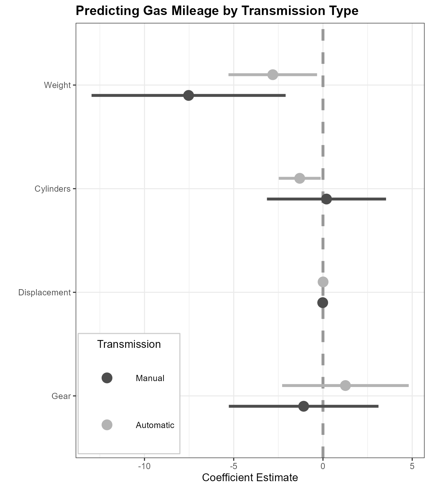
Also note in the above example the additional manner of using the relabel_predictors function: in addition to being used on the ggplot object created by dwplot before further customization, it may also be used on a tidy data frame before it is passed to dwplot.
Additionally, one can change the shape of the point estimate instead of using different colors. This can be useful, for example, when a plot needs to be printed in black and white. Here we also vary the linetype of the whiskers.
dwplot(
by_trans,
vline = geom_vline(
xintercept = 0,
colour = "grey60",
linetype = 2
),
# plot line at zero _behind_ coefs
dot_args = list(aes(shape = model)),
whisker_args = list(aes(linetype = model))
) +
theme_bw(base_size = 4) + xlab("Coefficient Estimate") + ylab("") +
ggtitle("Predicting Gas Mileage by Transmission Type") +
theme(
plot.title = element_text(face = "bold"),
legend.position = c(0.007, 0.01),
legend.justification = c(0, 0),
legend.background = element_rect(colour = "grey80"),
legend.title.align = .5
) +
scale_colour_grey(
start = .1,
end = .1,
# if start and end same value, use same colour for all models
name = "Model",
breaks = c(0, 1),
labels = c("Automatic", "Manual")
) +
scale_shape_discrete(
name = "Model",
breaks = c(0, 1),
labels = c("Automatic", "Manual")
) +
guides(
shape = guide_legend("Model"),
colour = guide_legend("Model")
) # Combine the legends for shape and color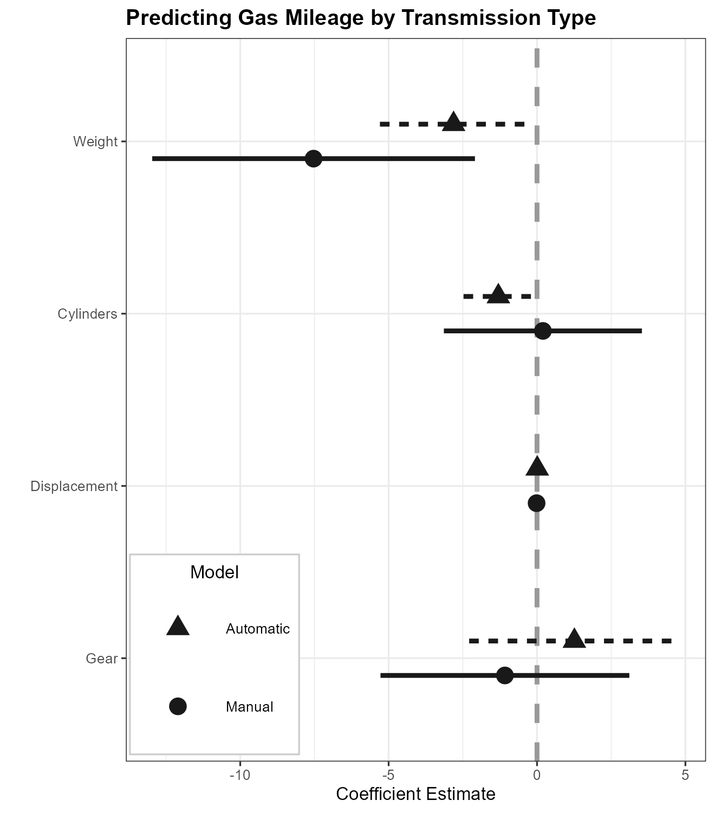
It is also easy to plot classes of model objects that are not supported by tidy or parameters::parameters: one simply extracts the results from the model object and builds the data frame to pass to dwplot oneself. Many functions generate results that can be extracted by coef().
# the ordinal regression model is not supported by tidy
m4 <- ordinal::clm(factor(gear) ~ wt + cyl + disp, data = mtcars)
m4_df <- coef(summary(m4)) %>%
data.frame() %>%
tibble::rownames_to_column("term") %>%
rename(estimate = Estimate, std.error = Std..Error)
m4_df## term estimate std.error z.value Pr...z..
## 1 3|4 -4.03517968 2.45869171 -1.6411898 0.1007580
## 2 4|5 -1.37662018 2.28622404 -0.6021370 0.5470829
## 3 wt -1.13452561 0.98498075 -1.1518252 0.2493929
## 4 cyl 0.41701081 0.60620009 0.6879095 0.4915098
## 5 disp -0.01343896 0.01188167 -1.1310664 0.2580271
dwplot(m4_df)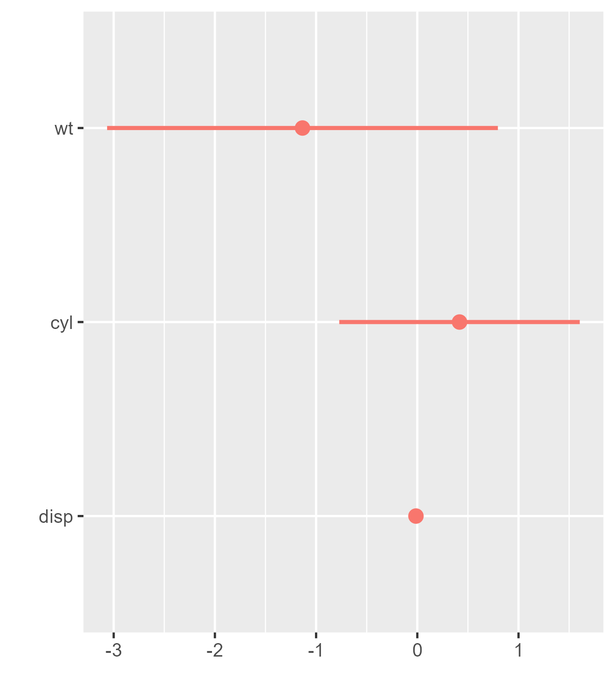
Working with a tidy data frame, it is similarly straightforward to plot just a subset of results or to rescale or reorder coefficients. One often desirable manipulation is to standardize the scales of variables. Gelman (2008), for example, suggests rescaling ordinal and continuous predictors by two standard deviations to facilitate comparison with dichotomous predictors. Although this can of course be done before model estimation, it can be more convenient to simply rescale the coefficients afterwards; the by_2sd function, which takes as arguments a data frame of estimates along with the original data frame upon which the model was based, automates this calculation.
# Customize the input data frame
m1_df_mod <-
m1_df %>% # the original tidy data.frame
by_2sd(mtcars) %>% # rescale the coefficients
arrange(term) # alphabetize the variables
m1_df_mod # rescaled, with variables reordered alphabetically## # A tibble: 4 x 7
## term estimate std.error statistic p.value model by_2sd
## <chr> <dbl> <dbl> <dbl> <dbl> <chr> <lgl>
## 1 cyl -6.37 2.19 -2.91 0.00722 Model 1 TRUE
## 2 disp 1.72 2.98 0.578 0.568 Model 1 TRUE
## 3 gear -0.724 1.17 -0.621 0.540 Model 1 TRUE
## 4 wt -7.42 2.12 -3.51 0.00161 Model 1 TRUE
dwplot(m1_df_mod)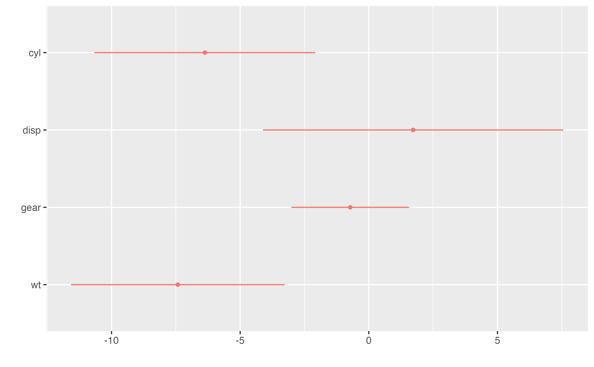
An input data frame can also be constructed from estimates of other quantities of interest, such as margins, odds ratios, or predicted probabilities, rather than coefficients.
# Create a data.frame of marginal effects
m5 <- glm(am ~ wt + cyl + mpg, data = mtcars, family = binomial)
m5_margin <- margins::margins(m5) %>%
summary() %>%
dplyr::rename(
term = factor,
estimate = AME,
std.error = SE,
conf.low = lower,
conf.high = upper,
statistic = z,
p.value = p
)
m5_margin## term estimate std.error statistic p.value conf.low conf.high
## cyl 0.084403 0.05464 1.5447 1.224e-01 -0.02269 0.19150
## mpg -0.005115 0.02485 -0.2058 8.369e-01 -0.05382 0.04359
## wt -0.550800 0.12266 -4.4905 7.107e-06 -0.79121 -0.31039
dwplot(m5_margin)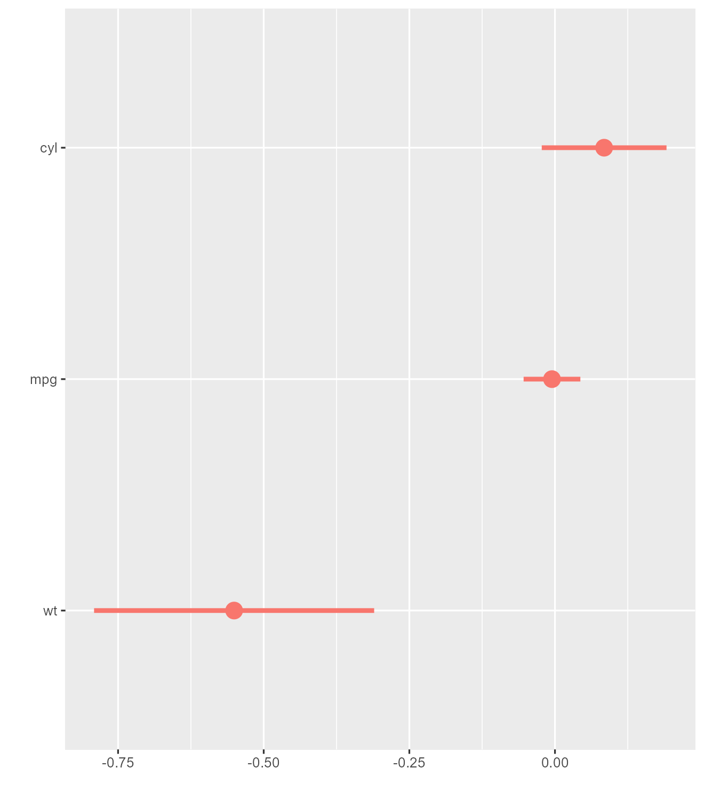
Since the marginal effects are widely used in nowadays social science, dwplot offers a convenient shortcut margins. Users can plot the average marginal effects (AME) instead of regression coefficients by setting margins to TRUE. The confidence intervals of the AME can be set by the argument ci.
dwplot(m5, margins = TRUE)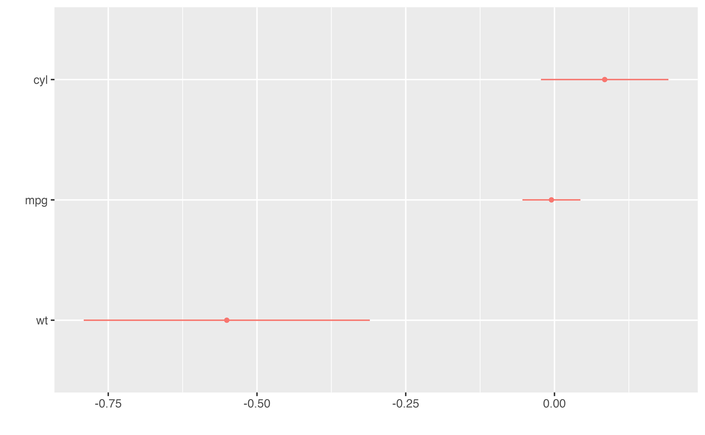
dwplot(m5, margins = TRUE, ci = .8)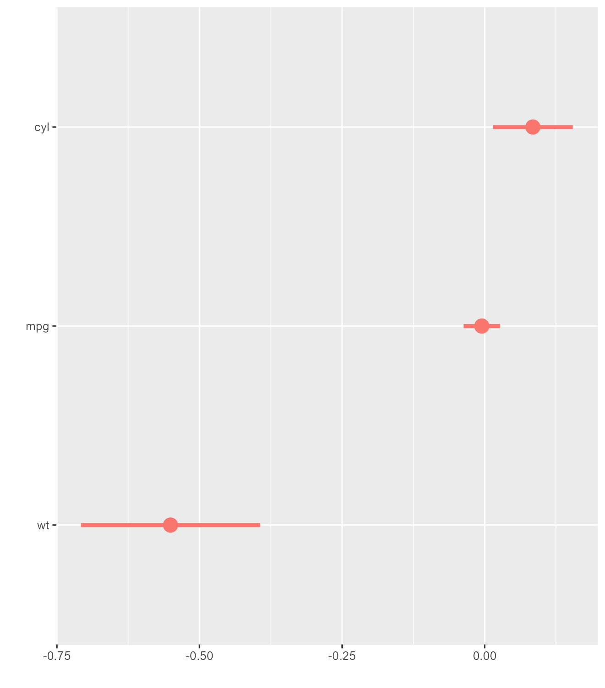
Grouping Predictors
It is frequently desirable to convey that the predictors in a model depicted in a dot-and-whisker plot form groups of some sort. This can be achieved by passing the finalized plot to the add_brackets function. To pass the finalized plot to add_brackets without creating an intermediate object, simply wrap the code that generates it in braces ({ and }):
# Create list of brackets (label, topmost included predictor, bottommost included predictor)
three_brackets <- list(
c("Overall", "Weight", "Weight"),
c("Engine", "Cylinders", "Horsepower"),
c("Transmission", "Gears", "Manual")
)
{
dwplot(list(m1, m2, m3),
vline = geom_vline(
xintercept = 0,
colour = "grey60",
linetype = 2
)) %>% # plot line at zero _behind_ coefs
relabel_predictors(
c(
wt = "Weight",
# relabel predictors
cyl = "Cylinders",
disp = "Displacement",
hp = "Horsepower",
gear = "Gears",
am = "Manual"
)
) + xlab("Coefficient Estimate") + ylab("") +
ggtitle("Predicting Gas Mileage") +
theme(
plot.title = element_text(face = "bold"),
legend.position = c(0.993, 0.99),
legend.justification = c(1, 1),
legend.background = element_rect(colour = "grey80"),
legend.title = element_blank()
)
} %>%
add_brackets(three_brackets, fontSize = 0.3)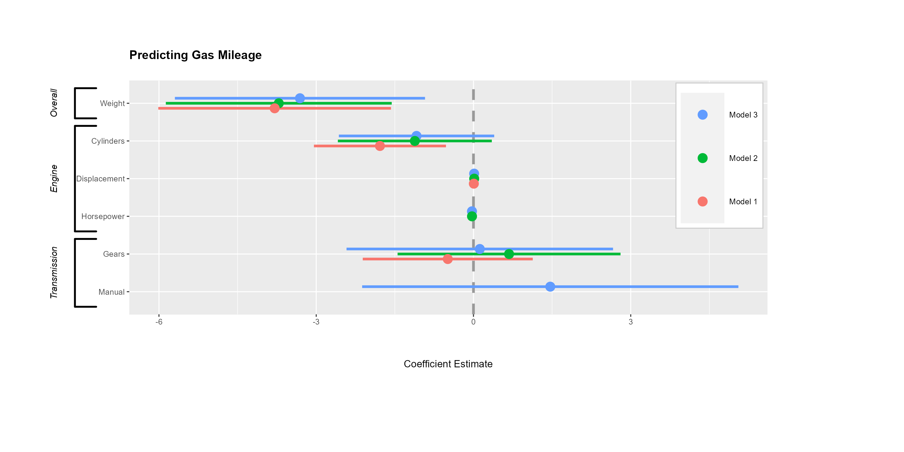
Presenting Regression Results as Normal Distributions
Inspired by the way Edwards, Jacobs, and Forrest (2016, 5) displayed regression coefficients as normal distributions, dotwhisker now provides an easy way to make similar plots. To create such plots, call dwplot as always but include the argument style = "distribution", then customize with other dotwhisker functions and ggplot additions as usual:
by_transmission_brackets <- list(
c("Overall", "Weight", "Weight"),
c("Engine", "Cylinders", "Horsepower"),
c("Transmission", "Gears", "1/4 Mile/t")
)
{
mtcars %>%
split(.$am) %>%
purrr::map( ~ lm(mpg ~ wt + cyl + gear + qsec, data = .x)) %>%
dwplot(style = "distribution") %>%
relabel_predictors(
wt = "Weight",
cyl = "Cylinders",
disp = "Displacement",
hp = "Horsepower",
gear = "Gears",
qsec = "1/4 Mile/t"
) +
theme_bw(base_size = 4) + xlab("Coefficient") + ylab("") +
geom_vline(xintercept = 0,
colour = "grey60",
linetype = 2) +
theme(
legend.position = c(.995, .99),
legend.justification = c(1, 1),
legend.background = element_rect(colour = "grey80"),
legend.title.align = .5
) +
scale_colour_grey(
start = .8,
end = .4,
name = "Transmission",
breaks = c("Model 0", "Model 1"),
labels = c("Automatic", "Manual")
) +
scale_fill_grey(
start = .8,
end = .4,
name = "Transmission",
breaks = c("Model 0", "Model 1"),
labels = c("Automatic", "Manual")
) +
ggtitle("Predicting Gas Mileage by Transmission Type") +
theme(plot.title = element_text(face = "bold", hjust = 0.5))
} %>%
add_brackets(by_transmission_brackets, fontSize = 0.3)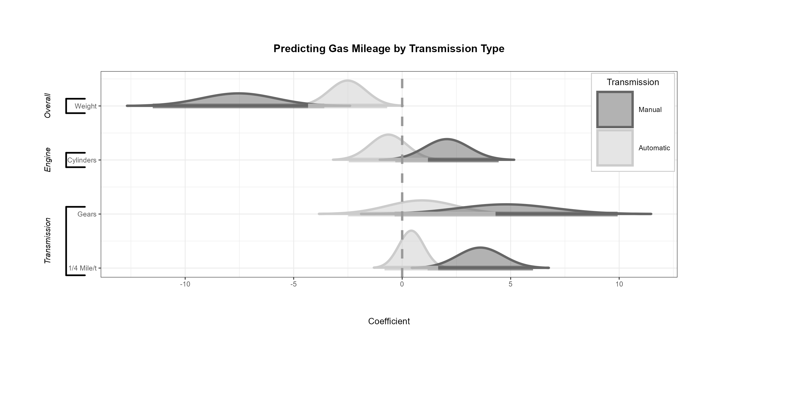
The ‘Secret Weapon’ and ‘Small Multiple’ Plots
A variation of dot-and-whisker plot is used to compare the estimated coefficients for a single predictor across many models or datasets: Andrew Gelman calls such plots the ‘secret weapon’. They are easy to make with the secret_weapon function. Like dwplot, the function accepts both lists of model objects and tidy data frames as input. The var argument is used to specify the predictor for which results are to be plotted.
data(diamonds)
# Estimate models for many subsets of data, put results in a tidy data.frame
by_clarity <- diamonds %>%
group_by(clarity) %>%
do(broom::tidy(lm(price ~ carat + cut + color, data = .), conf.int = .99)) %>%
ungroup %>% rename(model = clarity)
# Deploy the secret weapon
secret_weapon(by_clarity, var = "carat") +
xlab("Estimated Coefficient (Dollars)") + ylab("Diamond Clarity") +
ggtitle("Estimates for Diamond Size Across Clarity Grades") +
theme(plot.title = element_text(face = "bold"))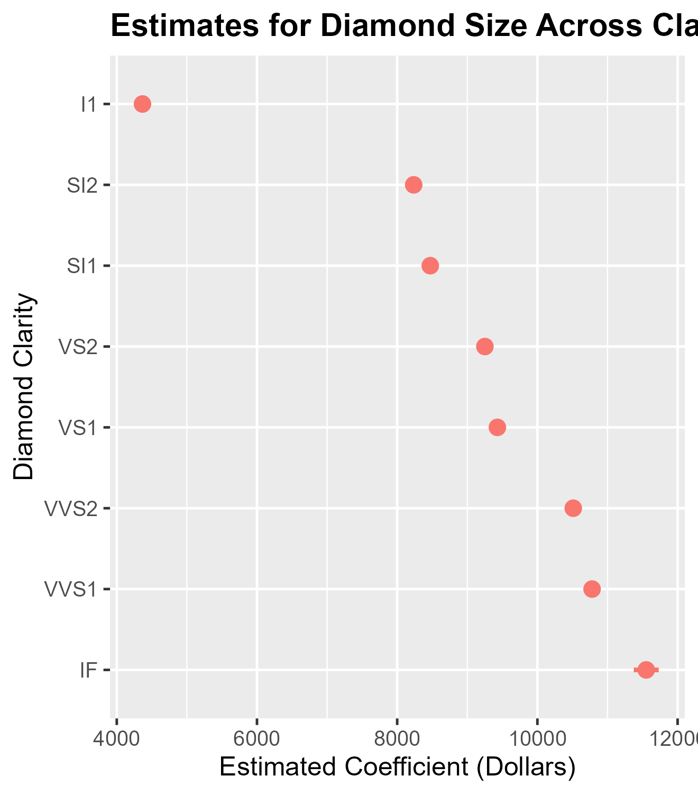
A final means of presenting many models’ results at once in a particularly compact format is the “small multiple” plot of regression results (see Kastellec and Leoni 2007, 766). Small-multiple plots present estimates in multiple panels, one for each variable: they are similar to a stack of secret weapon plots. The small_multiple function makes generating these plots simple. Here, we pass a tidy data frame of six models to the function so we can to rescale the coefficients first, but the function can accept a list of model objects as well.
# Generate a tidy data frame of regression results from six models
m <- list()
ordered_vars <- c("wt", "cyl", "disp", "hp", "gear", "am")
m[[1]] <- lm(mpg ~ wt, data = mtcars)
m123456_df <- m[[1]] %>%
broom::tidy() %>%
by_2sd(mtcars) %>%
mutate(model = "Model 1")
for (i in 2:6) {
m[[i]] <- update(m[[i - 1]], paste(". ~ . +", ordered_vars[i]))
m123456_df <- rbind(m123456_df,
m[[i]] %>%
broom::tidy() %>%
by_2sd(mtcars) %>%
mutate(model = paste("Model", i)))
}
# Relabel predictors (they will appear as facet labels)
m123456_df <- m123456_df %>%
relabel_predictors(
c(
"(Intercept)" = "Intercept",
wt = "Weight",
cyl = "Cylinders",
disp = "Displacement",
hp = "Horsepower",
gear = "Gears",
am = "Manual"
)
)
# Generate a 'small multiple' plot
small_multiple(m123456_df) +
theme_bw(base_size = 4) + ylab("Coefficient Estimate") +
geom_hline(yintercept = 0,
colour = "grey60",
linetype = 2) +
ggtitle("Predicting Mileage") +
theme(
plot.title = element_text(face = "bold"),
legend.position = "none",
axis.text.x = element_text(angle = 60, hjust = 1)
) 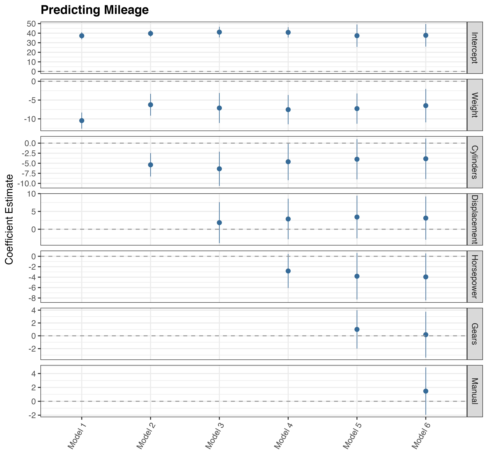
To facilitate comparisons across, e.g., results generated across different samples, one can cluster the results presented in a small multiple plot. To do so, results that should be clustered should have the same value of model, but should be assigned different values of an additional submodel variable included in the tidy data frame passed to small_multiple. (We also replicate three examples in Kastellec and Leoni (2007) with dotwhisker in a separate vignette, “kl2007_examples”.)
# Generate a tidy data frame of regression results from five models on
# the mtcars data subset by transmission type
ordered_vars <- c("wt", "cyl", "disp", "hp", "gear")
mod <- "mpg ~ wt"
by_trans2 <- mtcars %>%
group_by(am) %>% # group data by transmission
do(broom::tidy(lm(mod, data = .))) %>% # run model on each group
rename(submodel = am) %>% # make submodel variable
mutate(model = "Model 1") %>% # make model variable
ungroup()
for (i in 2:5) {
mod <- paste(mod, "+", ordered_vars[i])
by_trans2 <- rbind(
by_trans2,
mtcars %>%
group_by(am) %>%
do(broom::tidy(lm(mod, data = .))) %>%
rename(submodel = am) %>%
mutate(model = paste("Model", i)) %>%
ungroup()
)
}
# Relabel predictors (they will appear as facet labels)
by_trans2 <- by_trans2 %>%
select(-submodel, everything(), submodel) %>%
relabel_predictors(
c(
"(Intercept)" = "Intercept",
wt = "Weight",
cyl = "Cylinders",
disp = "Displacement",
hp = "Horsepower",
gear = "Gears"
)
)
by_trans2## # A tibble: 40 x 7
## term estimate std.error statistic p.value model submodel
## <fct> <dbl> <dbl> <dbl> <dbl> <chr> <dbl>
## 1 Intercept 31.4 2.95 10.7 6.01e- 9 Model 1 0
## 2 Intercept 46.3 3.12 14.8 1.28e- 8 Model 1 1
## 3 Weight -3.79 0.767 -4.94 1.25e- 4 Model 1 0
## 4 Weight -9.08 1.26 -7.23 1.69e- 5 Model 1 1
## 5 Intercept 34.6 2.48 13.9 2.31e-10 Model 2 0
## 6 Intercept 46.2 3.17 14.6 4.51e- 8 Model 2 1
## 7 Weight -2.23 0.752 -2.96 9.19e- 3 Model 2 0
## 8 Weight -7.40 2.40 -3.09 1.15e- 2 Model 2 1
## 9 Cylinders -1.30 0.379 -3.43 3.43e- 3 Model 2 0
## 10 Cylinders -0.789 0.953 -0.828 4.27e- 1 Model 2 1
## # ... with 30 more rows
small_multiple(by_trans2) +
theme_bw(base_size = 4) +
ylab("Coefficient Estimate") +
geom_hline(yintercept = 0,
colour = "grey60",
linetype = 2) +
theme(
axis.text.x = element_text(angle = 45, hjust = 1),
legend.position = c(0.02, 0.008),
legend.justification = c(0, 0),
legend.title = element_text(size = 8),
legend.background = element_rect(color = "gray90"),
legend.spacing = unit(-4, "pt"),
legend.key.size = unit(10, "pt")
) +
scale_colour_hue(
name = "Transmission",
breaks = c(0, 1),
labels = c("Automatic", "Manual")
) +
ggtitle("Predicting Gas Mileage\nby Transmission Type")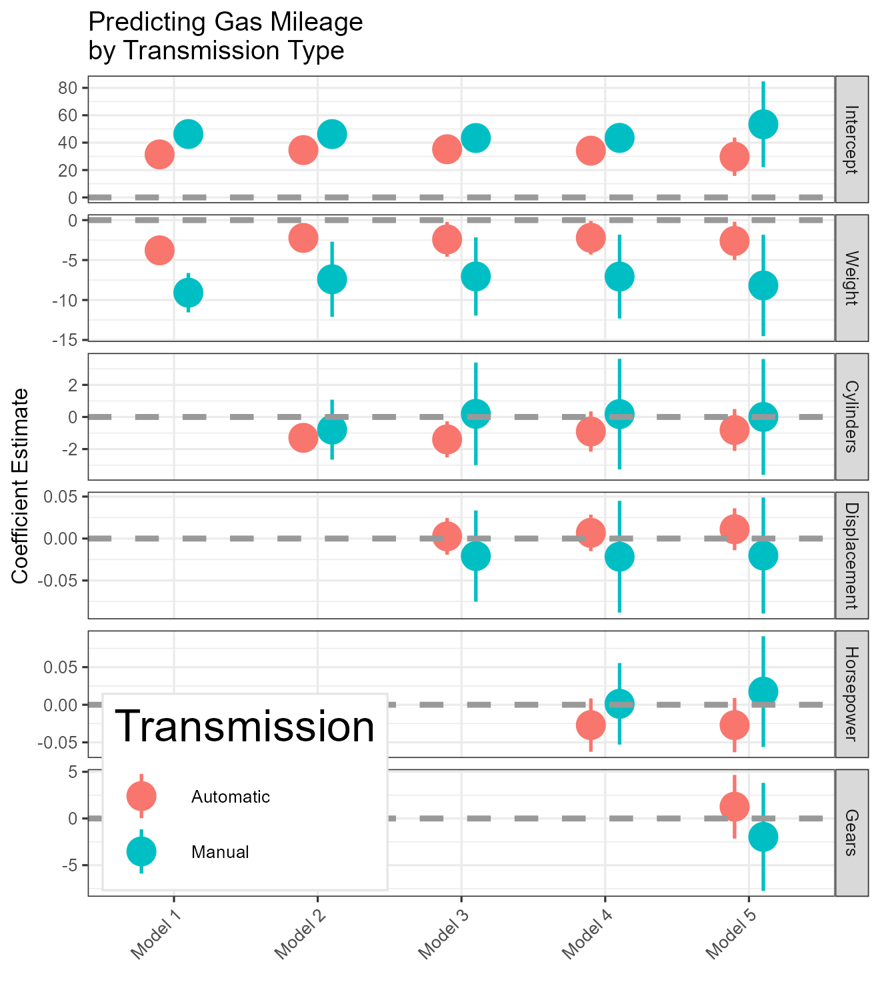
Conclusion
The dotwhisker package provides a flexible and convenient way to visualize regression results and to compare them across models. This vignette offers an overview of its use and features. We encourage users to consult the help files for more details.
The development of the package is ongoing. Please contact us with any questions, bug reports, and comments.
Affiliation
Frederick Solt
Department of Political Science,
University of Iowa,
324 Schaeffer Hall,
20 E Washington St, Iowa City, IA, 52242
Email: frederick-solt@uiowa.edu
Website: https://fsolt.org
Yue Hu
Department of Political Science,
Tsinghua University,
Mingzhai 414,
Zhongguancun Avenue, Haidian, Beijing 100084
Email: yuehu@tsinghua.edu.cn
Website: https://sammo3182.github.io